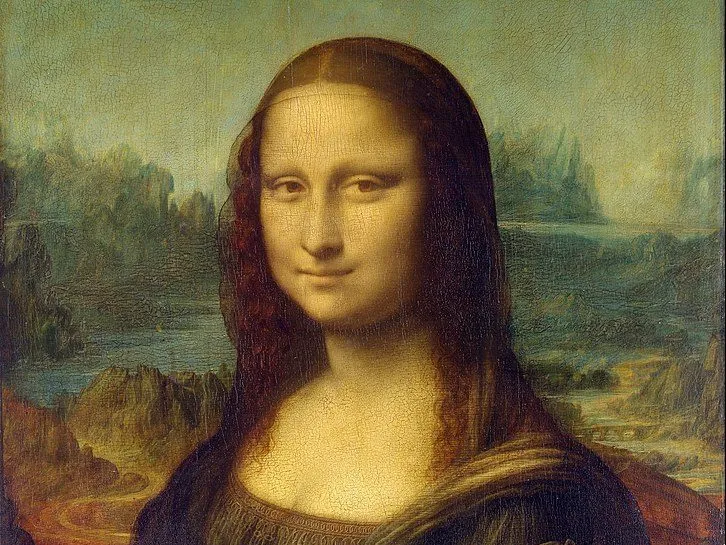

Gallery

Mona Lisa

Starry Night


Leonardo da Vinci (1452-1519) was a Renaissance polymath renowned for his contributions to art, science, and engineering. His masterpieces include the "Mona Lisa" and "The Last Supper," both celebrated for their artistic innovation and emotional depth. In addition to his art, Leonardo's extensive notebooks reveal groundbreaking studies in anatomy, engineering, and mechanics, showcasing his diverse genius. His work continues to influence and inspire across multiple fields even centuries after his death.

Vincent van Gogh (1853-1890) was a Dutch post-impressionist painter known for his vivid colors and emotional depth. His most famous works include "Starry Night" and "Sunflowers," created during a tumultuous period of his life. Despite struggling with mental health issues and only gaining widespread recognition after his death, van Gogh's work has had a profound and lasting impact on modern art.
For inquiries, please reach out to us through our contact form available on this website.